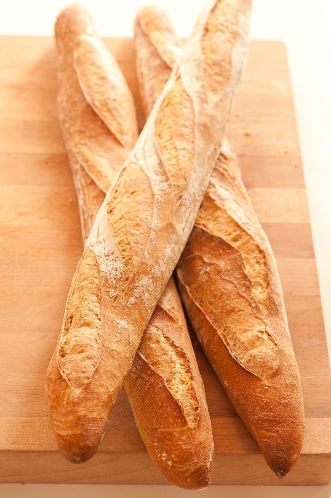

店のこと
店のこと
お店について確認できているのは、所在地とInstagramのアカウントだけです。
「想像してみる」部分は制作側の想像で、お店の実際の様子・考え・商品とは関係ありません。
確認できていること
- 店名は「パン ちゃるら」、業種はパン屋
- 所在地は長野県伊那市長谷黒河内2187
- 電話番号はなし。連絡はInstagramから
- 営業時間・定休日・メニュー・価格・ご予約・駐車場は準備中

想像してみる
水の音のように、聞こえてくる店
由来は分かりません。制作側は、「ちゃるら」という軽やかな響きから、山の水の音のように、通りがかりの人にも気軽に聞こえてくるお店かもしれない、と想像しました。実際のお店の姿ではありません。



土地のこと
長谷について
伊那市長谷は、一般に南アルプスの麓にひろがる山里として知られている地域です。ただし、お店が地域の素材や景色とどう関わっているかは分かりません。お店との関係は不明であり、ここでは土地の一般的な印象を紹介しているだけです。